George Washington Masonic National Memorial
January 2010 · Alexandria, Virginia
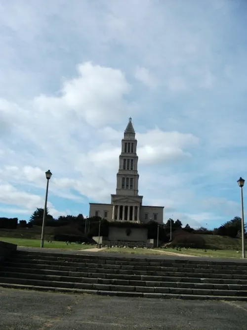
In January 2010 I visited the George Washington Masonic National Memorial in Alexandria, Virginia.
Photos cover the tower exterior and steps, the bronze Washington statue, themed museum rooms, apron and jewel cases, and the city view from above. Public museum and architecture only.


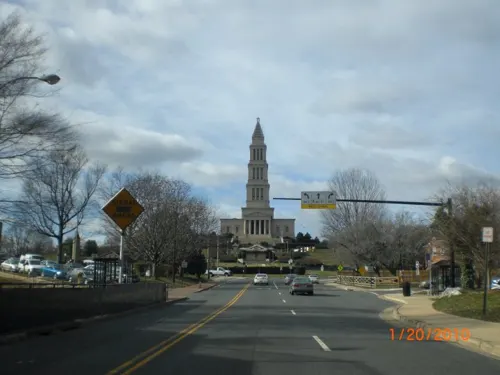

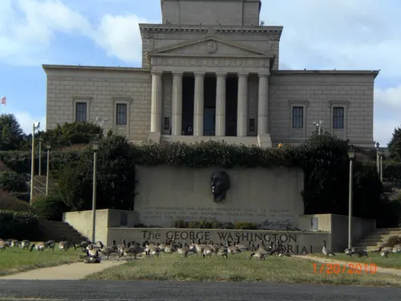

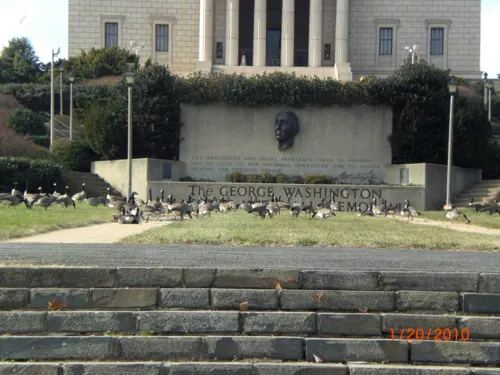

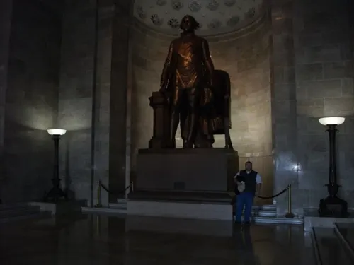

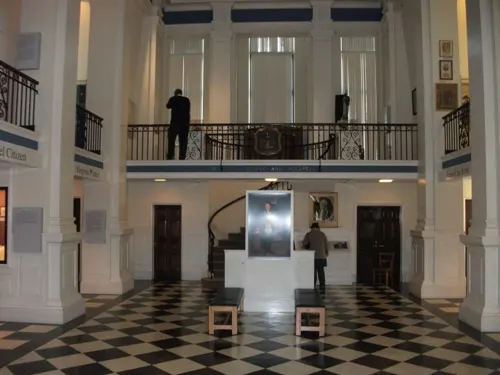

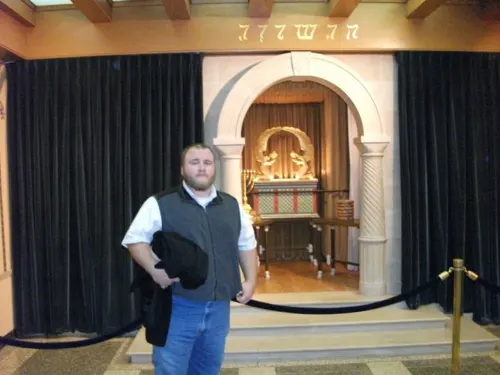

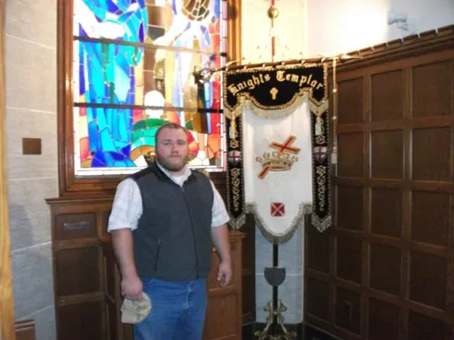

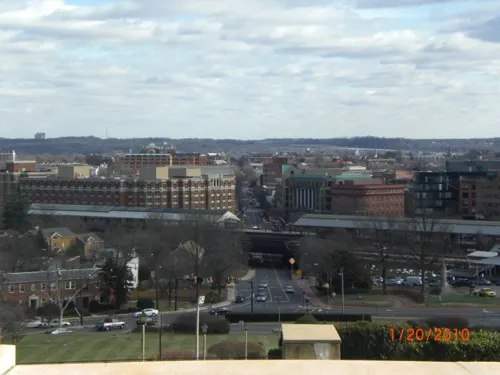

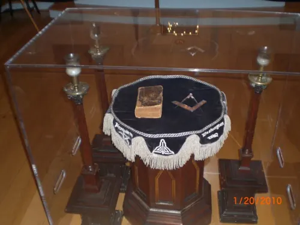

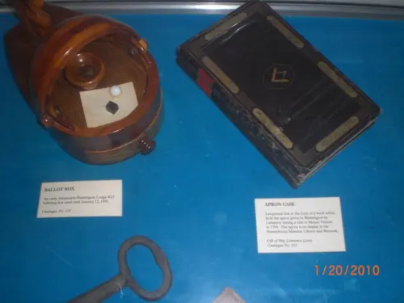

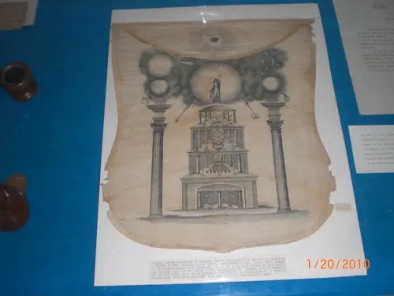

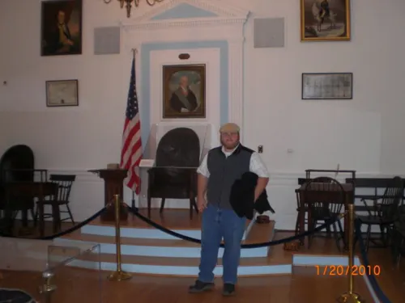

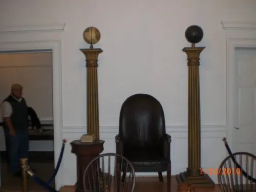